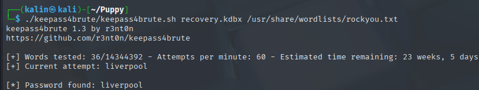
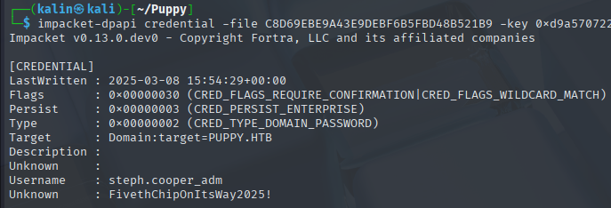

Puppy
Puppy was a medium-difficulty Windows Active Directory box that began with SMB enumeration using provided credentials for levi.james. BloodHound analysis revealed that levi.james belonged to the HR group, which had GenericWrite permissions over the Developers group, enabling group membership manipulation to access restricted SMB shares.
I exploited the privilege escalation path by adding levi.james to the Developers group using bloodyAD, which granted access to the DEV share containing a KeePass database file. The database was protected with KDBX 4.x format, requiring keepass4brute instead of the incompatible keepass2john tool. After successfully cracking the database with the password "liverpool", I extracted multiple credentials and performed password spraying against domain users. The password spray revealed valid credentials for ant.edwards ("Antman2025!"), who belonged to the Senior Devs group with GenericAll permissions over adam.silver. I used bloodyAD to reset adam.silver's password and remove the ACCOUNTDISABLE UAC flag, as BloodHound showed this account was a member of the Remote Management Users group.This provided Evil-WinRM access to the domain controller as adam.silver.
Post-compromise enumeration revealed a site backup in C:/ containing an XML file with hardcoded credentials for steph.cooper ("ChefSteph2025!"). After authenticating as steph.cooper, I discovered DPAPI-protected credential blobs and a masterkey in the user's AppData directory. Using impacket-dpapi with steph.cooper's password and SID, I decrypted the masterkey and subsequently the credential blob, revealing domain administrator credentials for steph.cooper_adm ("FivethChipOnItsWay2025!"), leading to full domain compromise.
User flag
Initial nmap scan reveals a few ports that always accompany an Active Directory DC, like the Simple DNS Plus on port 53.
I used the provided credentials for Levi.James to do some enumeration on the domain.
nxc smb puppy.htb -u levi.james -p 'KingofAkron2025!' --users
This confirms that the credentials are valid. I will use bloodhound to look for potential attack paths.
Bloodhound enumeration
Levi.James is a member of the HR group, and members of that group have GenericWrite over the developers group.
That group contains 3 different users.
Ant.Edwards is a member of the senior devs group, who has GenericAll over Adam.Silver.
And Adam.Silver is a member of the remote management users group.
Levi.James cannot reach Ant.Edwards, and this is a gap that I cannot solve with what information I have.
Looking through SMB shares
One thing I usually do during my initial enumeration attempts with valid credentials is checking the SMB shares. I'll do that right now.
nxc smb puppy.htb -u levi.james -p 'KingofAkron2025!' --shares
There is a single non-standard share, which Levi cannot do anything with. However, It's name and description suggests a connection with the developers group, which Levi can add themselves to.
I will add Levi.James to the developers group using bloodyad.
bloodyAD -d puppy.htb -u levi.james -p 'KingofAkron2025!' --dc-ip 10.10.11.70 add groupMember developers levi.james
As expected, the developers group can access this share. I'll use impacket's smbclient to interact with the share.
There is a KeePass database file stored in this share. There wasn't anything interesting otherwise, so I downloaded it onto my box.
Unlocking the KeePass database
Initially, I tried to use keepass2john to create a crackable hash, but the one I had installed was not compatibile.
I then went online and searched for a different tool that could help me with this task.
https://github.com/r3nt0n/keepass4brute.git
The description of this tool states:
KDBX 4.x format (Keepass >=2.36) is not supported by keepass2john yet, so there is no known way to extract the hash and crack it.
This matches with KeePass installer version I saw in the DEV share, which was 2.7.9

recovery.kdbx | liverpool
Using KeePassXS, I'll load the database.

Password spraying
I already had a user list from earlier. For passwords, I took every entry from the KeePass database and created a new list.

ant.edwards | Antman2025!
Reseting the password of Adam.Silver
At first, I wanted to attack Adam.Silver with a targeted kerberoast. While I could set an SPN for them, my usual tools would not output a crackable hash.
Instead, I decided to reset this user's password. Resetting account passwords should usually be avoided because doing so could be risky for OPSEC and could break automated tasks.
bloodyAD -d puppy.htb --host dc.puppy.htb -u ant.edwards -p 'Antman2025!' --dc-ip 10.10.11.70 set password adam.silver Password123
During my bloodhound enumeration, I failed to mention that Adam's account is disabled. I'll use bloodyAD to remove the ACCOUNTDISABLE UAC flag. Otherwise, all login attempts will fail as the account will be inactive.
bloodyAD -d puppy.htb --host dc.puppy.htb -u ant.edwards -p 'Antman2025!' --dc-ip 10.10.11.70 remove uac adam.silver -f ACCOUNTDISABLE
With the new password, I will use evil-winrm to connect to the DC.
Root flag
In the C:/ directory, I found a few non-standard directories.
I downloaded the site backup onto my machine, and in the first XML file I saw, I found a pair of credentials.
steph.cooper | ChefSteph2025!
Discovering DPAPI credentials in Steph's directory tree
After logging in as Steph, I began with some light enumeration or spots that might contain useful artifacts. If nothing is found, I will pivot to tools like WinPEAS.

Steph.Cooper has a DPAPI-protected blob and a masterkey as well. I'll get both of those onto my machine.
(Note from the future: Both the masterkey and the blob are located under Appdata/Roaming/Microsoft)
Downloading the DPAPI masterkey and credential blob
First, I'll copy both files to the C:/programdata directory.
Then I'll remove the hidden attribute from them both. This will allow me to download the files via evil-winrm, but is not needed for file transfer via smbclient/smbserver.

Decrypting the credential blob
The first step in this process will be decrypting the masterkey. It requires both the user's password and their SID. I have all of those, so I'll proceed with the decryption, using impacket-dpapi.
impacket-dpapi masterkey -f 556a2412-1275-4ccf-b721-e6a0b4f90407 -sid S-1-5-21-1487982659-1829050783-2281216199-1107 -password 'ChefSteph2025!'
This decrypted key will allow me to get the contents of the encrypted credential blob.
impacket-dpapi credential -file C8D69EBE9A43E9DEBF6B5FBD48B521B9 -key <KEY>

steph.cooper_adm | FivethChipOnItsWay2025!
Inside the blob, credentials for steph.cooper_adm were revealed. I'll remote into the machine as this user.
Rooted!